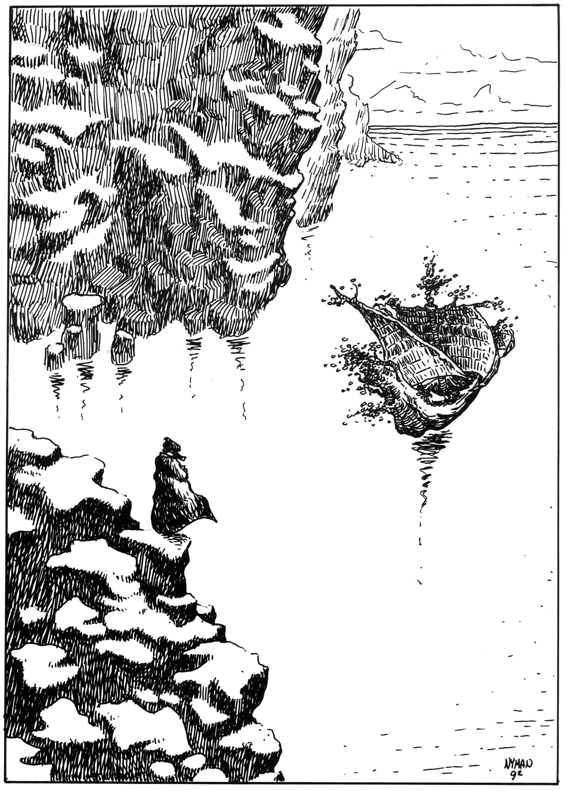

04. Vägen tillbaka
Nominatorns boning
Artiklar: Nominatorns boning Personer: Nominatorn
Sedan de fallit över Bythos kant finner äventyrarna att de hamnat i en slottskammare. De ligger i en hög på ett hårt stengolv nedanför ett stadigt träbord som når dem ungefär till hakan när de reser sig upp. Deras kläder är indränkta med onaturligt tungt vin. Enstaka droppar träffar dem tungt som mjuka stenbumlingar. Vid rummets ena vägg brinner en eld i öppen spis, men ingen varelse syns i rummet.
Kartan över Bythos
Nu kan rollpersonerna få veta var de egentligen varit. SL kan låta dem studera kartan, upptäcka detaljerna och undersöka resten av rummet. Så småningom söker de sig vidare ut i Nominatorns slott.
Vad göra nu?
Rollpersonerna behöver inte nödvändigtvis möta Nominatorn även om mötet kan vara intressant. Deras uppdrag är att ta sig tillbaka till spelvärlden med Store Stenfar, dvs. Kristalltjuren. Innan de kan ge sig av måste de emellertid laga tjuren genom att utplåna den siste arkonen Nachashs namn från Bythoskartans baksida. Nachash besitter fortfarande den sista delen av Store Stenfars livslåga.
SL måste se till att äventyrarna tar med sig regnbågspennan tillbaka till spelvärlden såvida de inte gör det frivilligt.
Möte med Nachash i palatset
När Nachash dör i Bythos, återskapas han inte inne i Bythos, utan i Nominatorns palats eftersom hans namn står skrivet på Bythoskartans utsida. Nu söker han hämnd på guden. I slottet är Nachash bara tio meter lång, och hans storleksbaserade egenskaper minskas till en femtedel.
Rollpersonerna möter Nachash när han håller på att sluka Nominatorn och blir ihjälslagen (se avsnitt om Nominatorns boning), eller när han redan blivit ihjälslagen en eller flera gånger och på nytt vaknar inne i ritverkstaden. Nachash vet att han är hopplöst underlägsen den gudomlige Nominatorn, men också att han är odödlig. Han avser att anfalla gång på gång tills Nominatorn slutligen går åt. Om den strategin inte fungerar (och det gör den ju inte), tänker han förstöra allt han hittar och döda alla Nominatorns gäster för att reta guden på det sättet.
När han dött 1T4 gånger kommer ormen alltså att gång på gång ge sig på rollpersonerna med högst verkliga bett och svansslag.
Möte med Nominatorn
Nominatorn har så smått ledsnat på babludernas orkester och blir uppiggad av de nya gästerna. Han kommer att prata med dem, visa dem runt, bjuda på mat och så småningom att försöka förslava dem genom att få dem att skriva sitt namn i gästboken (eller någon annanstans där han kan lägga beslag på namnteckningarna). Han kan till exempel rita en karta över spelvärlden, påstå att den är magisk och att rollpersonerna kommer att flyttas till den bara de skriver sitt namn på kartan. (SL bör i detta fåll låta någon äventyrare undvika fällan och försöka rädda de andra, till exempel genom att döda Nachash och väcka Store Stenfar.)
Rollpersonerna kan när de lämnar Nominatorns palats få en rejäl belöning för att de kommit så här långt. Under tidigare äventyr har de mest blivit av med saker. Guden kan till exempel lära dem något ingen tidigare visste i spelvärlden (avråder dock från hi-tech som krut eller ångmaskiner — dessa förstör bara stämningen), drastiskt förbättra deras kunnande i något hantverk, eller skänka dem en lättare kopia av något han gjort, något som är värt en förmögenhet i spelvärlden eller som besitter överlägsna egenskaper.
Store Stenfar vaknar
När Nachashs namn har utplånats från kartan, vaknar Kristalltjuren med alla delar inklusive huvudet på plats. Han söker upp rollpersonerna i slottet. Tjuren talar som berget Ranz så sakta och mörkt att rollpersonerna inte förmår uppfatta vad han säger (ranzinermunkar är däremot tränade att lyssna på talande stenar. Sällskapet har förhoppningsvis Bodonius med sig från Oraklets fyra ögon, annars kan de söka upp honom som tolk i spelvärlden när de kommit dit.) Till Nominatorn säger tjuren:
- att han är en idiot, en förrädare och en fähund
- att han är så god och löser alla i sällskapet från eventuella dumheter han hittat på
- att han ska skänka äventyrarna varsin present för sveda och verk
- att han ska ge sällskapet regnbågspennan om de inte redan har tagit den
- att han och rollpersonerna går härifrån nu, men att Nominatorn kan bo kvar i det ruttnande liket av Store Stenfars förra kropp som den mask han är.
Uppläxningen låter som åska och tar tid som motsvarar ett spelvärldsdygn. Under tiden tittar Nominatorn ner i marken och skrapar med foten som ett olydigt barn. Om rollpersonerna undrar vad som händer ber han dem generat vänta i något annat rum. Han kommer att göra som Store Stenfar säger och sedan hålla sig undan tills sällskapet lämnat slottsruinen.
De Grå Hallarna
Varelser: Ebharing
Orientering
Sällskapet kan lämna Nominatorns boning genom endera av passagerna som leder ut till de grå hallarna (hallarnas miljö beskrivs i inledningen). De måste nu tillryggalägga ett antal fiktiva mil i mellanvärlden. Om de svänger vänster eller höger i olika korsningar spelar mindre roll, SL kan lägga ut passagerna allt eftersom de går. Hallarna ser ändå inte likadana ut om de återvänder.
Äventyrarna kan rida på Kristalltjuren som med lätthet bär dem allesammans, även om ritten blir obekväm, eller gå själva. Tjuren vet inte vart man ska, utan stannar vid varje vägskäl i väntan på direktiv. Det finns två sätt att orientera sig. Antingen stannar man och lyssnar i purpursnäckan efter Melealinas musik, eller så använder Iblis eller någon annan magiker sin TRANSFERRITUAL och leder sällskapet hem.
(I nödfall får Kristalltjuren känna till vägen, för hem vill man ju.)
Ghumgakks tarmvarelser
Som ett litet intermezzo kan man stöta på jagande varelser från demonen Ghumgakks tarmkanal. Ghumgakk finns fortfarande kvar i de grå hallarna som en svart portal. Tarmvarelserna är ute i hallarna och raggar mat åt sig och demonen med hjälp av sin skönsång. Om de lyckas locka med sig en rollperson till porten avstår emellertid Ghumgakk från just denna läckerbit eftersom han har visst intresse av att den överlever. Porten rasar ner med ett brak framför äventyraren och i samma ögonblick bryts förtrollningen av tarmvarelsernas sång.
Möte med Ebharing
Om Shagul vet att rollpersonerna är ute och springer i de grå hallarna, har han genom Ebharing raggat upp ett stort antal mindre demoner som flyger runt och spanar efter sällskapet. Bortsett från flygförmågan har dessa demoner i hallarna färdigheter som motsvarar vättar. Kommer en spaningsdemon undan möter sällskapet Ebharing på samma sätt som Melealina och Manghalde gjorde i äventyrets inledning.
Så snart man upptäcker den feta, gröna statyn stannar Kristalltjuren. Den lyser kraftigare och börjar sakta växa. Musklerna sväller, benen blir grövre, fler horn växer ut och lågor slår ut från näsborrarna. Även i sitt larvstadium som Kristalltjur har Store Stenfar förmågan att växa och i princip bli hur stark som helst, men förändringen tar viss tid och det gäller för rollpersonerna att överleva tills de kan få hjälp. Samtidigt som han närmar sig, kommer Ebharing att flina och undra vilken marknad man fatt tag i det där kreaturet på och vad han mjölkar.
SL bör på förhand bestämma i hur många SR äventyrarna måste hålla ut mot demonen för att utmaningen ska bli lagom besvärlig och sedan låta striden ha sin gång. Ett förslag är (10 + antal rollpersoner) SR.
När den bestämda tiden gått, kommer Kristalltjuren till undsättning. Den rusar som ett lokomotiv mot Ebharing, spetsar demonen på hornen och fortsätter med den rakt in i väggen. Den feta statyn spricker mitt itu. Delarna faller pladdrande ner på golvet, men rösten blir allt tunnare tills den helt försvinner. På detta sätt krossas Ebharings manifestation i de grå hallarna. Demonen finns däremot kvar på annan plats och dyker upp för revansch i nästa äventyr.
Samtidigt med demonstatyn, spricker den kraftiga stridsmundering Kristalltjuren byggt på sig. Innanför ser den ut som tidigare. Efter utpustning kan färden fortsätta.
Ut ur hallarna
Här och där stöter man på utgångar från de grå hallarna. Utgångarna ser alltid ut på samma sätt (se bilden). En mindre, rak gång leder ut från de större hallarna. Från gången avgår ytterligare en passage. På väggen mitt emot denna andra passage finns en stor färgad stenvägg med underliga mönster. Dessa mönster berättar vilken värld utgången leder till och kan vara en karta, en typisk bild eller egentligen en bild av vad som helst.
Bilden till spelvärlden kan förslagsvis vara runan Mezikat som man tidigare sett på Woddamporten. Alternativt kan konturerna av spelvärldens kontinenter vara ritade på bilden.
Går äventyrarna ut i fel värld kan jag bara önska dem och deras spelledare lycka till.
När sällskapet kommit ut i spelvärlden bleknar passagerna och hallarna bort bakom dem.
Tjurens och pennans nya former
Kristalltjuren och regnbågspennan har inte samma manifestation i spelvärlden som i de grå hallarna. Så snart man kommer ut i hemvärlden sugs Kristalltjurens huvud och ben in i kroppen som samtidigt omformas. Efter några ögonblick ligger framför rollpersonerna en meterbred, orörlig, oval kristall. Den lyser med ett starkt gyllene ljus.
Regnbågspennan har samtidigt ändrat form, vilket man kanske upptäcker långt senare. Den har blivit spolformad och i den smalare ändan fått en metallkrok omgiven av små metallöglor. En liten trådstump sticker ut ur ett hål på skaftet nära kroken. Drar man i tråden kommer mer tråd ut. Man kan dra hur länge som helst utan att tråden någonsin tar slut. Den tycks skifta i färg.
Detaljer: Ett lyckat hantverk med sömnad => Regnbågspennan har omvandlats till en skyttel, ett redskap som används för att väva tyg.
Den ovala kristallen väger i spelvärlden ca 200 kg. Ljuset tycks komma från kristallens centrum. Kikar man in i den anar man konturerna av en gyllene nyckel. Om Raoga, det vita oraklet, sjunger i kristallens närhet kommer svarta metallpelare att börja växa ut ur den. Melealina kommer genast att hejda sången eftersom de växande groddarna kommer för tidigt och snabbt gör kristallen tyngre.
SL: Kristalltjuren var Store Stenfars larvstadium. Den ovala kristall han omvandlas till i spelvärlden är nästa stadium som motsvarar en puppa. Under rätt omständigheter kommer han att blomma ut till ett nytt slott, men tills dess visar han inte mer livstecken än en vanlig sten. De svarta metallpelarna som växer fram när Raoga sjunger är groddar som kommer att bilda ett nytt slott. Melealina vill inte att slottet ska växa upp här och nu, utan hejdar sången.
Världskartan som ska göras om i spelvärlden är en väv. Regnbågspennan har anpassat sig till detta och blivit en skyttel. Skytteln är svårhanterlig eftersom den fortfarande väger 30 kg. Lyckas man väva en bild med den blir bilden verklighet enligt reglerna i avsnittet om Nominatorns boning.
Tillbaka i Trakorien
Återkomsten
Tidpunkt
Tiden kan gå olika fort i spelvärlden och i andra världar. Därför kan SL låta spelarna återvända när det passar med övrigt spel.
Plats
Sällskapet kommer ut ur en bergssida som vetter mot havet någon kilometer längre bort och ett par hundra meter längre ner. Porten bakom dem bleknar och blir vanlig bergssida. Framför äventyrarna ligger gräsklädda sluttningar som sträcker sig ända ner till strandklipporna. Man ser en liten fiskeby med mindre, öppna båtar. Ett stort lövträd tycks ha fallit omkull bland båtarna i hamnen.
När Kristalltjuren blivit en oval kristall, kanske den börjar rulla utför sluttningarna ner mot byn...
Detaljer: Ett lyckat Orientering => Man kommer ut i västlig riktning.
Ett lyckat Kulturkännedom eller motsvarande => Av husen och båtarna att döma tycks byn vara kargomitisk.
Ett lyckat Animism/Botanik => På en så här kall och blåsig kust växer normalt inga stora lövträd.
SL: Man befinner sig vid den kargomitiska fiskebyn Frakudd strax norr om björkebeningarnas land på västra Palamux. Resterna av Yoh Niur ligger fem mil åt öster, bortom de oöverstigliga bergen. Melealina väntar på sällskapet nere i byn tillsammans med en skeppsbesättning gråalver ombord på skeppet Bladverk.
Byn
Byn Frakudd ligger i en avlägsen trakt av Kargom, ett område som andra kargomiter kallar Cherotga — ”bakom hälen”. Man kan bara komma dit med båt eller från luften. De hundrafemtio människorna i byn är enkla fiskare som sällan deltar i Kargoms uppror och räder. Bland dem finns bara fem män med krigsvana och ingen magiker.
Frakuddernas äldste påstod sig en gång ha sett gråalver segla förbi långt ute till havs. Och i hans fars tid ska en gråalv ha flutit iland som man genast slog ihjäl och höll uppstoppad i hövdingens hydda. Någon annan kontakt med havsfolket hade man emellertid inte haft. Förvirringen blev därför stor när ett flytande träd fullt med gråalver en morgon seglade in i byns hamn. En av det mystiska havsfolket steg fram och sade på utmärkt kargomitiska att man kom i fredligt ärende och att man tänkte gästa byn några dagar. Främlingarna medförde rikliga skänker och mat frän havsdjupen, men berättade inte ytterligare om sina planer. Byborna förstår inte vad främlingarna säger och vill heller inte ha med dem att göra. Samtidigt beskriver deras legender gråalver som mystiska trollkarlar från havet. Det är inte värt att göra sig till ovän med sådant otyg.

Gråalverna och Melealina
För gråalverna är Melealina en helig kvinna. När hon besökte deras havskoloni långt ute i västerhavet för ett åttiotal år sedan sa hon att hon snart skulle kalla på dem. När Melealina ansåg tiden vara mogen att lämna Stegos, skickade hon ett bud till gråalverna med en delfin. Normalt seglar havsfolket på smäckra, välbyggda skepp, men eftersom detta var ett heligt uppdrag gick de till havs burna av en levande havslind som formats för ändamålet. Linden heter Vealogil — ”Bladverk”. Besättningen, bestående av trettio manliga och kvinnliga alver, leds av seglerskan Aldrun.
Melealina har förmågan att teleportera sig och andra personer till ett träd som resenärerna känner väl till. Alvsierskan förflyttade sig på detta sätt till gråalvernas skepp med de återstående oraklen och Bodonius av Ranz. Skeppet låg då någon dags seglats utanför Frakudd. Hon visste genom sin siarkonst att äventyrarna skulle dyka upp vid byn men inte exakt när.
Melealinas historia
Melealina berättar om stjärnefallet som föll i samband med kometen som ödelade Yoh Niur och om hur himlen efter fallet blev tydlig som en öppen bok. Alla beräkningar förenklades flera gånger om. Hon och många andra kunde plötsligt se konfluxens läge klart. Därför måste äventyrarna, Kristalltjuren och oraklen snarast avsegla mot norr. De hinner och vågar inte ta vägen förbi Stegos. Kungen kommer säkert att följa efter dit.
Melealina berättar vidare att matematikern Nastigast blev mördad av RhabdoRana på Stegos och att hon därför var tvungen att ge sig av utan att lämna spår efter sig. Hon teleporterade bort sig och oraklen utan att berätta ens för kungen vart hon skulle. Det är bättre att han inget vet just nu. (Alvkvinnan vill helst inte berätta att hon lurat Arn Dunkelbrink eller att hon medverkade vid mordet på Nastigast.) Om rollpersonerna undrar, ber hon dem komma ihåg att den rakaste vägen inte alltid leder snabbast till målet.
Komplikation: Tillbaka till Stegos
Om äventyrarna tar sig ut ut de grå hallarna genom att lyssna till Melealinas musik i Purpursnäckan kommer de till henne i Frakudd, men om Iblis leder dem ut med sin transferritual, följer han istället deras beskrivning. Då kommer sällskapet antagligen tillbaka till Stegos istället.
På Stegos är förvirringen stor. Nastigast är mördad och Melealina spårlöst försvunnen med de andra oraklen. Alvkvinnan har dock lämnat ett meddelande hos en läkekvinna som blev hennes vän vid palatset i Mea Plakole. Kvinnan skulle bara lämna meddelandet till rollpersonerna om de dök upp igen. Det lyder som följer: ”Möt mig med SS vid templet i staden på älvornas andra bokstav”
SL: I Oraklets fyra ögon träffade äventyrarna hos Melealina fyra älvor som hette Pipo, Sipo, Siso och Piso. Bokstaven är alltså I. Staden är Isakra på Trinsmyra, Trakoriens enda stad som börjar på I. Har rollpersonerna inte träffat dessa älvor lyder meddelandet istället: ”Möt mig med SS vid templet i staden som börjar på I.”
Man talar med Arn Dunkelbrink
Arn Dunkelbrink är naturligtvis mycket orolig och även en smula irriterad över Melealinas mystiska utflykter. Om rollpersonerna diskuterar saken med honom, beslutar han sig för att ge sig av till Isakra genast. Han klär sig i sina gamla vandringskläder och ger sig diskret av med eller utan rollpersonerna. Draken Blatifagus får order om att bära kristallen till Trinsmyra och vänta på sällskapet i bergen norr om Isakra.
Man talar inte med Arn Dunkelbrink
Berättar man inte något för kungen, ger han sig ändå av på egen hand för att söka efter alvkvinnan. Han har hur som helst tröttnat på palatslivet.
Äventyret avslutas
Äventyret slutar alltså med att man ger sig av mot Isakra som en första anhalt på väg mot Marjura och den femte konfluxen.
...Och fortsätter
Krönikan om den femte konfluxen började med Svavelvinter, och fortsatte med Oraklets fyra ögon. Nästa del avslutar serien. Spelet kommer att börja i eller på väg till Isakra. Mycket kan hända på vägen dit. Gråalvernas skepp Bladverk seglar norrut längs Kargoms kust och måste passera öarna Lumaria, Manovga och Chrachz, där hövdingarna just svurit Shagul lydnad. SL kan lägga in egna äventyr på vägen i väntan på fortsättningen.